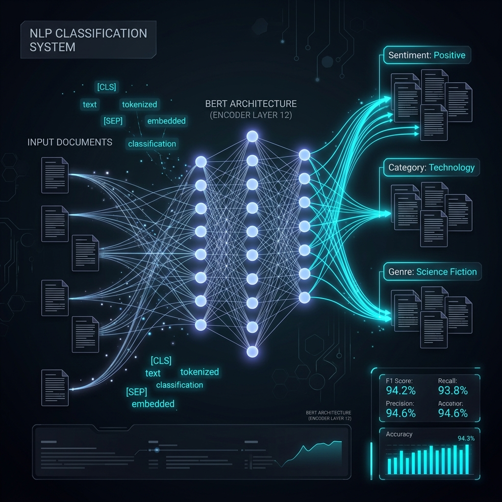

Parallel Corpus Linguistic Pipeline
Engineered a Python-based NLP pipeline to parse parallel translations, fit word length probability density curves, and execute relative hypothesis testing.

Background & Objective
In quantitative translation studies and corpus linguistics, validating semantic equivalence and structural density between parallel translations is vital. Translating text often expands or contracts word lists per page. Without a structured validation method, identifying translation drift or structural imbalances in cross-lingual documents is error-prone.
This project implements a statistical NLP pipeline. By extracting parallel texts page-by-page, tokenizing textual strings, fitting Gaussian distributions to page-wise word lengths, and executing paired t-tests, the pipeline determines if translation word expansion is statistically significant.
Pipeline Design & Workflow
1. Document Parsing & Text Extraction
Ingests parallel English (erman_english.pdf) and German (german-converted.pdf) translation documents. Using pdfplumber, the pipeline automates text extraction page-by-page while preserving structural boundaries.
2. Tokenization & Lexical Counting
Processes the extracted textual strings using regular expressions (re.findall(r'\w+', text)) to split sentences into lexical units, generating total word lengths per page and absolute word counts.
3. Normal Probability Density Modeling
Tabulates the extracted counts into a Pandas DataFrame and calculates essential metrics (Mean, Standard Deviation, and Variance). It fits a Gaussian PDF using scipy.stats.norm.fit and plots probability density curves against histograms using matplotlib.
4. Paired Hypothesis Testing
Applies a two-sided relative paired t-test (scipy.stats.ttest_rel) on page-wise word lengths to determine statistical equivalence across the parallel translation pair.
Key Statistical Findings
The pipeline executed a paired t-test on the page-by-page word counts of both translations. The statistical analysis returned a t-statistic of -1.2116 and a p-value of 0.265. Since the p-value is greater than the standard significance level of 0.05, we fail to reject the null hypothesis, indicating that there is no statistically significant variation in word length distribution between the translations.
Tech Stack
Pipeline Stats
- Linguistic Method Parallel Corpus
- Analysis Units Page-Wise Words
- Statistical Test Paired t-test
- Distribution Fit Gaussian (Normal)